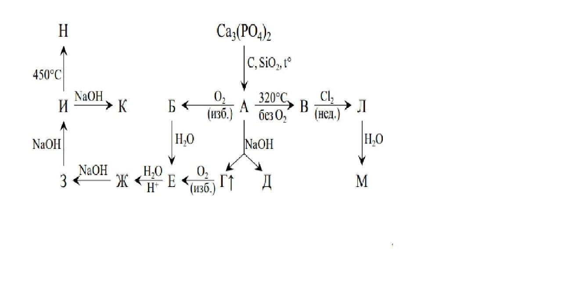
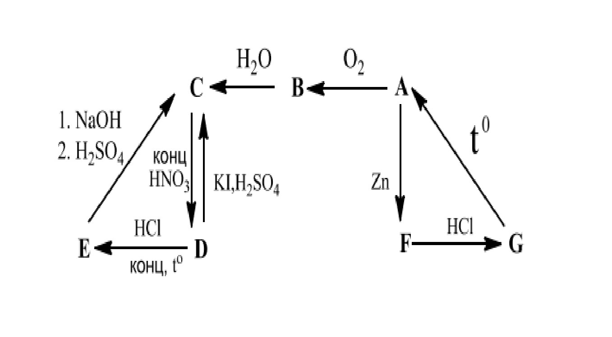
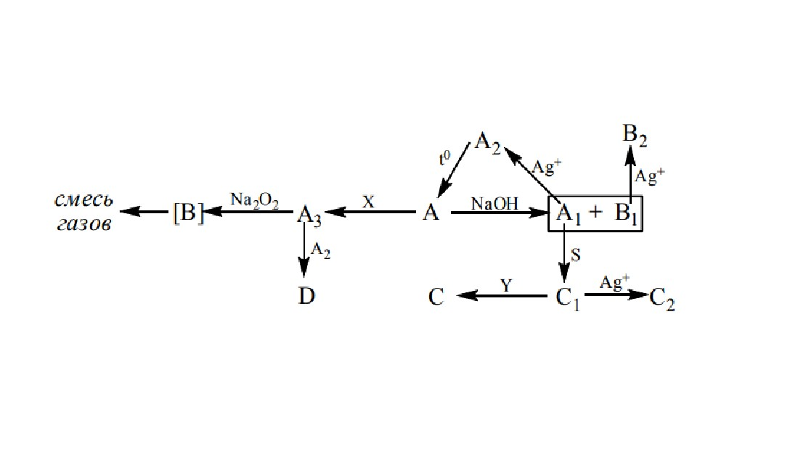
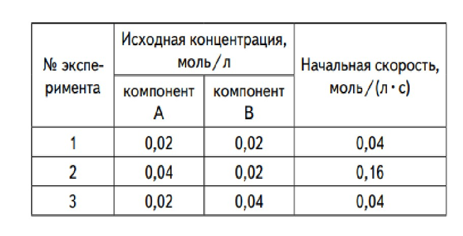

Химическая кинетика
Задачи и теоретические материалы по химической кинетике.
Здесь вы найдете задачи по химии для школьников 9-10 классов, а также раздел по химической кинетике.
Задачи и теоретические материалы по химической кинетике.
Задачи для учащихся 9 класса, охватывающих различные разделы неорганической химии.
Олимпиадные задачи по химии для 10 класса.
При восстановлении фосфата кальция углём с добавлением оксида кремния отгоняют пары простого вещества А (р-ция 1), которые конденсируются в виде желтоватых кристаллов. А способно самовоспламеняться на воздухе, сгорая до крайне гигроскопичного Б (р-ция 2). При нагревании А без доступа воздуха образуется красное вещество В (р-ция 3). Кипячение A с концентрированным раствором гидроксида натрия приводит к диспропорционированию с выделением газа Г и образованию в растворе соли Д (р-ция 4). Соль Д является сильным восстановителем. Из 0,25 г А может быть получено 45,2 мл (н.у.) Г. Газ Г легко воспламеняется при поджигании на воздухе образуя кислоту Е (р-ция 5), при растворении которой в воде образуется известная каждому школьнику кислота Ж (р-ция 6). Кислота Е образуется также если оставить Б на влажном воздухе (р-ция 7). При нейтрализации Ж раствором гидроксида натрия, последовательно образует соли З, И и К (р-ции 8-10). При хлорировании В в недостатке хлора можно получить жидкость Л (р-ция 11), при гидролизе которой образуется кислота М (р-ция 12). При пиролизе И образуется средняя соль Н еще одной кислоты (р-ция 13), содержащей мостиковый (соединенный с двумя атомами фосфора) атом кислорода. Все перечисленные вещества А – Н содержат элемент Х. Ниже приведена схема описанных превращений:
Газообразные при нормальных условиях вещества А – Г попарно реагируют между собой при нагревании, образуя во всех случаях одни и те же продукты – два вещества, входящие в состав воздуха. Данные об относительной плотности газовых смесей, участвующих в реакции, приведены в таблице. Реагенты во всех случаях взяты в стехиометрическом соотношении
| Реагирующие вещества | Плотность по водороду D(H2) исходной смеси | Плотность по водороду D(H2) смеси продуктов при 200° |
| А+Б | 11.5 | 11.5 |
| В+Б | 8.0 | 10.67 |
| В+Г | 12.4 | 11.27 |
1. Простое вещество А участвует в цепочке превращений:
Известно, что В представляет собой белый порошок, при растворении в воде дающий кислую реакцию среды, C – бесцветная ядовитая жидкость, а G – бесцветный ядовитый газ. Соединение Н – первое органическое производное А, представляющее собой дурно пахнущую жидкость (7,08 % кислорода, 21,24 % углерода по массе), – было получено действием хлорида Е на водный ацетат калия. Реакция сопровождается выделением углекислого газа.
1. На предлагаемой Вашему вниманию схеме представлены превращения веществ Х1 – Х9, содержащих в своем составе один и тот же элемент.

В таблице приведены некоторые свойства части из представленных на схеме веществ.
| Вещество | Окраска вещества при н. у. | Среда при растворении в воде | Тпл., ℃ | Ткип., ℃ |
| Х1 | Не окрашено | Нейтральная | -210 | -196 |
| X2 | Не окрашено | Щелочная | -78 | -33 |
| X3 | Не окрашено | Нейтральная | -164 | -152 |
| X4 | Синяя | Кислая | -102 | 4,5 |
Элемент Х – один из рекордсменов среди других элементов по числу образуемых им кислородсодержащих кислот. Эти кислоты и их соли имеют огромное промышленное значение: производство минеральных удобрений, синтетических моющих и водоумягчительных средств, получение медикаментов, зубных цементов, хлебопекарных порошков и даже изготовление плавленых сырков – всё это далеко не полный список областей, которые просто не могут обойтись без них! Ниже представлены схемы получения пяти из этих кислот (кислоты I–V).

Дополнительно известно:
• соединения А–Д тоже содержат элемент Х;
• соединение А красного цвета, а Б имеет желтоватый цвет;
• соединения В и Г состоят из двух элементов (бинарные);
• массовое содержание Х в соединении В в 1,516 раз меньше, чем в Г;
• в молекуле кислоты II два атома Х;
• в молекуле кислоты V четыре атома Х, входящих в состав восьмичленного цикла.
В книге Александра Иовского «Начальные основания химии» (1832 г) есть следующие сведения: «Осолетворенности Х отличаются своим особенным кислотным свойством, они двух степеней, т. е. Х соединяется с солетвором в двух различных содержаниях. Первосолетворенность Х получается, пропуская сухой солетвор в небольшую реторту, содержащую сухой Х. Но как скоро заметят, что образующаяся жидкость начинает делаться мутною, то немедленно прекращают пропускать в реторту солетвор. Мутность происходит не от другого чего, как от образующейся уже ... Второсолетворенность Х приготовляется также, как осолетворенность Х первой степени. Также пропускается в реторту, в коей находится Х, сухой солетвор, но дотоле, пока весь Х обратится в вещество белое, порошковатое. Сия осолетворенность тверда, бела как снег, весьма летуча. Обрабатываемая водой также разлагается, и от сего происходит кислота ... и соляная».
При взаимодействии концентрированного раствора сульфата меди с насыщенным раствором цианида калия образуется бесцветный газ А (реакция 1) с резким запахом (t пл. = -27,8℃, t кип. = - 21,2℃). При взрыве смеси газа А с избытком кислорода (реакция 2) объем не изменяется. В одном литре воды при 30℃ растворяется 350 мл газа, а в одном литре спирта при 20℃ – 2600 мл. Водный раствор газа А неустойчив и разлагается при хранении (реакция 3), образуя преимущественно продукт, который дает белый осадок с солями кальция (стронция, бария) (реакция 3а) и резко пахнущий газ при добавлении щелочи (реакция 3б). Помимо этого, в водном растворе образуется формиат аммония (HCOONH4), цианистый водород, мочевина ((NH2)2CO) и т. д.
В известном издании Ф. Коттона и Дж. Уилкинсона [Современная неорганическая химия, М.: Мир, 1969], а также в ряде книг по неорганической химии проводятся аналогии между молекулами A, B, C, D и группой простых веществ, к которой принадлежат X и Y. Представленная схема отражает некоторые аспекты химии указанных молекул.
Дополнительная информация:
• Простые вещества X и Y образованы атомами III и IV периода соответственно; X – газ, Y – жидкость (при ст.у.).
• A2, B2 и C2 плохо растворяются в воде; содержание серебра в их составе (в % по массе): 80,6, 72,0 и 65,0, соответственно.
• [B] неустойчив и разлагается с образованием смеси двух газов, имеющих плотность 1,25 г/л (н.у.).
Тони Старк по праву считается одним из самых ярких персонажей вселенной Marvel. История о молодом бизнесмене, показанная на больших экранах в 2008 г., начиналась драматично: владельца крупнейшей компании по производству оружия «Stark Industries» серьезно ранили и захватили в плен в Афганистане. Всё могло бы закончиться трагично, если бы миллионер не обладал выдающимися интеллектуальными способностями. За короткий промежуток времени Старк собрал уникальный боевой костюм, который позволил ему одержать победу над захватчиками и сбежать. Для энергообеспечения уникального костюма «Mark I» Старк собрал небольшой реактор, основой которого являлся металл A. В условиях заточения единственным источником A был сердечник ракеты «Stark Industries», содержащий 0,15 г A. Для сбора реактора Старк и его помощник извлекли весь металл A из сердечников 12 ракет. Металл A является одним из наиболее редких элементов, встречающихся в земной коре. Отметим, однако, что крупнейшее месторождение A в мире находится в Российской Федерации, в г. Норильске. Одним из уникальных свойств металла A является способность поглощать большое количество водорода. Получающиеся в результате адсорбции водорода в A растворы условно называют гидридами A состава AHx.
«Приключения Калле Блюмквиста» – серия книг знаменитой шведской писательницы Астрид Линдгрен, повествующая об отважном и умном 13-летнем мальчике, который мечтает стать известным сыщиком и печалится тем, что живет в тихом маленьком шведском городке, ведя обычную для ребят его возраста жизнь. Неожиданно Калле и его друзья становятся свидетелями ряда загадочных событий, связанных с дерзким ограблением, о котором пишут в газетах. Благодаря смелости и находчивости ребят, полиции удалось задержать преступника. В одном из эпизодов юный сыщик показал себя эрудированным юным химиком, сумев доказать, что плитка шоколада, которой преступник «угощает» его подругу, отравлена. Вот как ему удалось это сделать. «Прежде всего, нам нужен аппарат для получения водорода, – важно сказал Калле. – Вот он. Это обыкновенная колба, в которую я наливаю серную кислоту и кладу несколько кусочков цинка. Тут выделяется водород, так? Если теперь сюда ввести элемент X в каком угодно виде, то получится газ A. Отсюда газ поступает для просушивания в трубку с сухим хлористым кальцием, а затем вот в эту узенькую трубочку. Здесь мы подогреваем газ на спиртовке, и он распадается на водород и чистый X, причем X осаждается на стенках трубки в виде блестящего серо-черного налета…. Стеклянная трубочка подогрета. Калле измельчил кусочек шоколада, всыпал его через воронку в колбу и принялся ждать, затаив дыхание. Что такое? Да это же оно! Зеркало X! Страшное доказательство его правоты. Не веря своим глазам, Калле уставился на пробирку. В глубине души он все время сомневался. Теперь сомнения рассеялись».
В гомогенной системе протекает одностадийная (элементарная) реакция: 2A + B = С.
В ходе элементарной реакции A + 2B = АВ2 (при неизменной концентрации А) повышение концентрации вещества B в два раза вызвало возрастание скорости реакции в 3,2 раза.
В некоторой химической реакции первого порядка начальная концентрация исходного вещества составляла 0,48 моль/л, а через 15 мин. составила 0,11 моль/л.
Для одностадийной (элементарной) реакции А + 2В = 2С начальные концентрации веществ А, В и С соответственно равны (моль/л): 0,1; 0,18 и 0. Через 10 с после начала реакции концентрация вещества А стала 0,02 моль/л. Константа скорости прямой реакции равна 1,2.
В таблице представлены результаты исследования кинетики гипотетической реакции 3А + В → 2С + 2D (при постоянной температуре).
Реакция:
SO2Cl2 = SO2 + Cl2
описывается кинетическим уравнением первого порядка. Константа скорости реакции при 293 К составляет 2,2*10–5 с– 1.
Температурный коэффициент Вант-Гоффа для реакции:
C2H5I + OH– → C2H5OH + I–
в температурном интервале 25–60 °С равен 3,0.
Энергия активации некоторой реакции в отсутствие катализатора равна 80 кДж/моль, а в присутствии катализатора энергия активации уменьшается до значения 53 кДж/моль.
Даны реакций распада 23892U и 23890Th. Их периоды полураспада этих изотопов равны 4,5*109 лет и 1,4*1010 лет соответственно.
Для реакции разложения 2N2O5 → 4NO2 + O2 получены следующие кинетические данные:
| T, мин | 0 | 1 | 2 | 3 | 4 |
| с(N2O5), моль/л | 1,000 | 0,705 | 0,497 | 0,349 | 0,173 |
Реакция разложения вещества А описывается кинетическим уравнением первого порядка с константой скорости, равной 2,2*10-5 с-1 при 320 К.
Определите энергию активации реакции, константа скорости которой зависит от температуры следующим образом:
| T, К | 295 | 298 | 305 | 310 | 320 |
| k, c-1 | 4,93 *10-4 | 6,56 *10-4 | 1,40 *10-3 | 2,36 *10-3 | 6,12 *10-3 |
Определите энергию активации реакции, константа скорости которой зависит от температуры следующим образом:
| T, мин | 0 | 5 | 10 | 15 | 20 | 25 | 30 | 35 |
| с(N2O5), моль/л | 0,050 | 0,036 | 0,026 | 0,018 | 0,013 | 0,009 | 0,007 | 0,005 |
Д. И. Менделеев подробно изучал свойства растворов этанола, в частности зависимость плотности от состава. Один из таких растворов имел плотность 0,943 г/см3 и содержал 34,5 % этанола по массе.
Неизвестное вещество X массой 16,80 г внесли в вакуумированный реакционный сосуд объемом 10,0 л, добавили катализатор разложения (металлическую медь) и нагрели сосуд до 230 °C. За ходом реакции, протекающей при постоянной температуре, следили по зависимости общего давления в сосуде и количества поглощенной теплоты от времени. Экспериментальные данные представлены в таблице.
| t, мин | 0 | 10 | 20 |
| р, кПа | 117.1 | 160.4 | 187.7 |
| Q, кДж | 0 | -4.14 | -6.67 |
Через 30 мин сосуд охладили до 0 °C, давление в нем составило 47,7 кПа, а масса жидкости на дне сосуда – 16,38 г. Эта жидкость способна обесцвечивать бромную воду.